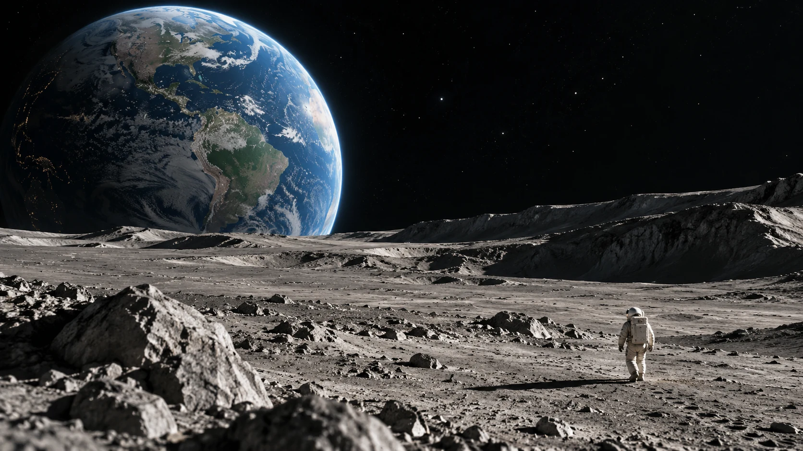

一句话，生成你的第一幕
此图将作为视频首帧 · 保留横屏构图与光影基调
文生视频 · 根据文字重新构图，不使用示例图片
720P · 默认 10 秒标价 ¥6.00 · 可用免费额度优先抵扣
选一个画面，让灵感先行示例图可作为首帧，生成时会参考画面构图
穿过云层，奔赴地平线最后的一束光
让城市的霓虹，在雨后的街头慢慢醒来

离开熟悉的世界，回望一颗蓝色的星球
下一幕，由你想象
灵感正在成为画面
生成的视频会自动保留在这台电脑的工作室中，可随时回来查看和下载
从一句描述开始，生成一个属于你的镜头
这张图片将作为视频首帧，后续动作由你的描述引导